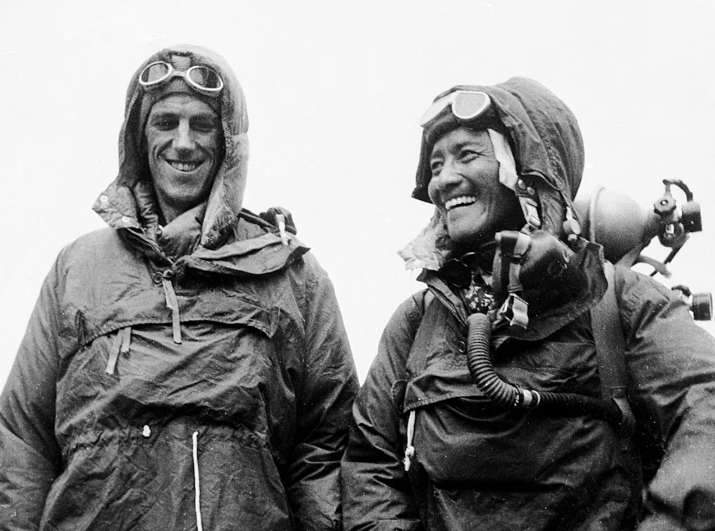

Climbers Conquer World's Highest Peak in a Momentous Feat
On May 29, 1953, the world witnessed history as New Zealand mountaineer Sir Edmund Hillary and Nepalese Sherpa Tenzing Norgay became the first humans to reach the summit of Mount Everest, standing at a staggering 29,032 feet. After enduring fierce weather conditions, treacherous terrain, and thinning air, the two men planted their flag at the top of the world.
This incredible achievement came as part of a British expedition led by Colonel John Hunt, aimed at achieving what had long been considered impossible. The triumphant duo stood at the peak for roughly 15 minutes, marveling at the stunning views of the Himalayas, before beginning their perilous descent.
Edmund Hillary, a humble beekeeper from New Zealand, and Tenzing Norgay, a skilled Sherpa guide who had attempted Everest multiple times before, were praised for their bravery and teamwork. News of their successful ascent reached London just in time to coincide with the coronation of Queen Elizabeth II, adding to the jubilant atmosphere in Britain.
Challenges Overcome: The Thin Air and the Perilous Terrain
The final push to the summit, from the South Col to the top, was described as the most dangerous part of the expedition. Hillary and Norgay had to cross the notorious Hillary Step, a nearly vertical rock face located at 28,000 feet, all while battling extreme exhaustion and a lack of oxygen.
